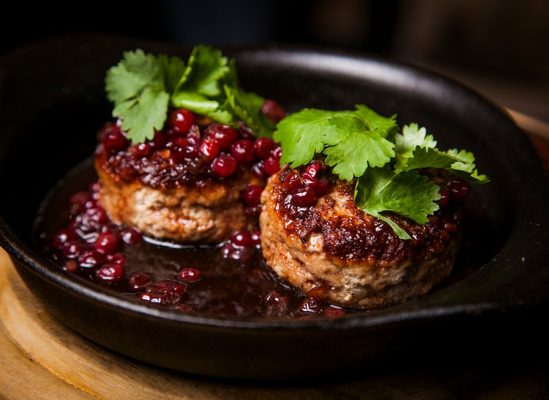
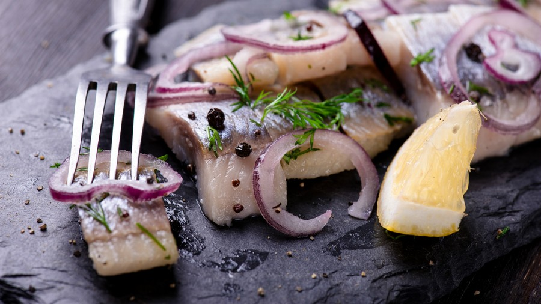
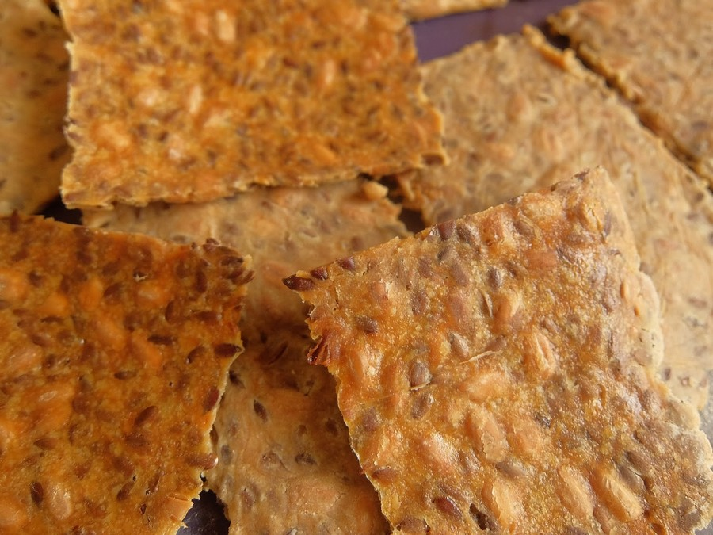
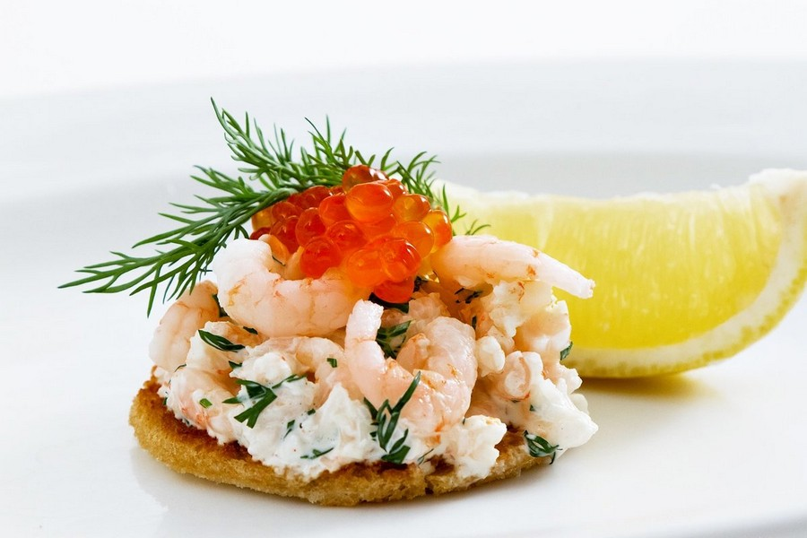

____
Традиционная еда
Котлеты с брусничным вареньем. — Варенье из брусники в Швеции занимает равную позицию с кетчупом. Ведь его подают и к блинчикам, и к котлетам, и к каше, и к кровяной колбаске. Несмотря на наличие сахара в данном лакомстве, его изредка намазывают на поверхность хлебных изделий. Настоящие ценители шведской природы – шведы –, с самого детства любят собирать бруснику и варить из терпких ягодок вкуснейшее варево.

Сельдь в маринаде. — Маринад для рыбы готовится разный, и включать он может: лук, горчицу, укроп, чеснок, карри, свеклу. Перечень компонентов бесконечным. Наиболее часто сельдь подают с отварным картофелем, сметаной, с зеленым луком, с твердыми сортами сыра, с варенными яйцами, с хрустящими хлебцами.

Хрустящие хлебцы. — Различные по своей конфигурации, толщину, составу и вкусу, хлебцы можно найти в каждом шведском маркете. Варианты бутербродов с этим продуктом бесчисленны. На них кладут нарезанные варенные яйца, намазывают икру, кладут ветчину, ломтики огурца. Обычно хлебцы подают на обед или ужин. И конечно же, их едят с брусничным вареньем.

Бутерброд с креветками. — История шведского бутерброда начиналась еще в XV веке. В то время толстые хлебные ломти служили в качестве тарелок. В стране сэндвич с креветками по сегодняшний день является достойным блюдом. Смесь, включающая мелко нарубленные вареные яйца, салат, помидор, огурцы и морепродукты с икорным соусом до сих пор является любимой пастой для хлеба.

____